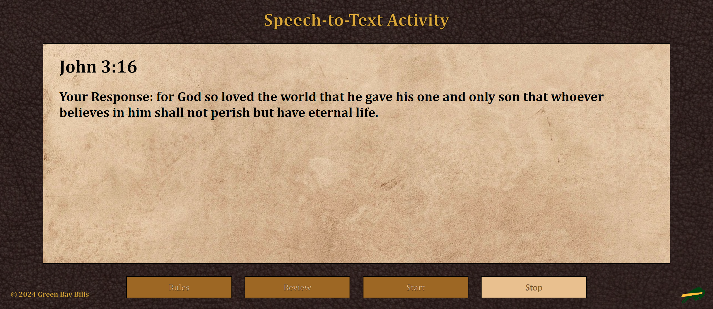

Technical Document
Developed by: Trent Repass and Nathan Klimt
Below is the techinical documentation for the Speech-to-Text Bible Memorization activity.
Introduction
This Speech-to-Text activity is part of a larger application designed to help users better memorize passages
of scripture. If this activity is selected by the user in this larger application, they will be tasked to simply speak
their desired verse into whatever device they are using and thus be graded on how well they recited the excerpt. The use
of this web app has been developed to be as easy to use as possible. Hopefully, this document will help troubleshoot
any technical problems a future developer may have while modifying the code or learning how the code works.
How Does it Work?
The basic "loop" of the application is as follows:
1. The user begins by being shown the rules of how their speech will be evaluated.
2. The user can then choose to either review the current verse being worked on or skip this and begin reciting if the verse is already known.
3. The user speaks into the device running the app (their speech is dynamically displayed back to them as they're talking).
4. After selecting the "Stop" button the user is evaluated on the accuracy of their speech according to the rules shown in step 1.
5. The user can repeat steps 2-4, as well as review the rules, as long as they are not in the process outlined in steps 3 and 4.
The following section dives into high-level "aspects" of how these "steps" are realized:
Aspect 1: The Rules Page
This page acts as the "home page" for the user. It just simply displays the rules of the grading system used for comparing what the user spoke to what the actual verse is.
From here, the user is allowed to either review the current verse being worked on or start the activity straight away. The UI logic for this page is outlined in the startRules()
function.

Aspect 2: The Review Verse Page
This page allows the user to review the current verse being worked with and also have the verse read out loud to them by clicking on the volume cone button. This page is the only
one that takes advantage of the "Speech Synthesis" feature of the "Web Speech API" currently. When the volume cone button is clicked, the readVerse() function is run. The UI logic for this page
is outlined in the startReview() function.

Aspect 3: The Live Speech-to-Text
Once the user clicks the "Start" button, the startActivity() function is called. After some initial UI changes, the "grammar" of the recognition object
is created, as per the "Web Speech API," using the createGrammer() function:
/* Lines 132-141 */
const grammar = createGrammar(verseObj.words);
console.log("grammar array: " + grammar);
const speechRecognitionList = new SpeechGrammarList();
speechRecognitionList.addFromString(grammar, 1);
recognition.grammars = speechRecognitionList;
This code first creates a list of words we want to listen for from the initial verse object passed through the greater application,
then adds this list of words into the recognition list and finally, makes the recognition object "aware" of said list of words.
Then, after giving their browser access to their device's microphone, the user can begin to speak the verse into their device. Upon access being
granted, we reach the following code:
/* Lines 200-213 */
recognition.start();
recognition.onresult = (event) => {
//Raw data from speech
spokenVerse = event.results[0][0].transcript;
//Convert said data into a JavaScript useable array
spokenWords = spokenVerse.split(/\s*\b\s*/);
//Dynamically writes spoken result to the screen
spokenOutput.innerHTML = "Your Response: " + spokenWords.join(" ") + ".";
};
resetActivityButton.addEventListener("click", endActivity);
This code "starts" the recognition by allowing the computer to take in speech input from the browser. Because we initially set recognition.continuous = true and
recognition.interimResults = true, the recognition object, as long as it is receiving results (i.e as long as the user keeps speaking), continuously runs and
returns chunks of words at a time to the spokenVerse array variable. This array is then split into the spokenWords array variable which is then outputted
to the screen through the "spokenOutput" HTML DOM element. Once the user stops speaking (i.e when the recognition object has stopped receiving results) the user then must click
the "Stop" button to begin the grading process, which is encompassed in the endActivity() function.

Aspect 4: The Text Grading
Remember those "initial UI changes" mentioned in the last section? Those have now become important:
/* Lines 153-188 */
for (var i=0; i < verseObj.words.length; i++) {
var span = document.createElement("span");
span.innerHTML = verseObj.words[i];
span.id = "span"+i;
wordDiv.appendChild(span);
span.classList.add("verseItemSpan");
if (/* verse contains punctuation at i index */) {
span.classList.add("punct");
span.classList.add("hidden");
punctDict[i] = verseObj.words[i];
} else {
span.classList.add("notGuessed");
compareVerse.push(verseObj.words[i].toLowerCase());
}
}
This code dynamically creates some span HTML DOM elements that will correspond to each word in the verse being worked with. This part of the code is particularly important because we
need to make sure there is a place for the "graded" string to be shown to the user. But at the same time, each word from said verse needs to be individually checked. Each span
is given an ID that is "span" followed by what number index (or word) it corresponds to. This brings us to the interworking of the endActivity() function:
/* Lines 225-246 */
recognition.stop();
for (var i=0; i < spokenWords.length; i++) {
spokenVerseWords.push(spokenWords[i].toLowerCase());
}
spokenVerseWordsLength = spokenVerseWords.length;
compareVerseLength = compareVerse.length;
if (compareVerseLength > spokenVerseWordsLength) {
for (var i = 0; i < (compareVerseLength - spokenVerseWordsLength); i++) {
spokenVerseWords.push("x");
}
}
for(var key in punctDict){
spokenVerseWords.splice(key, 0, punctDict[key]);
compareVerse.splice(key, 0, punctDict[key]);
}
First, the recognition object is set to stop, meaning it is done taking input. After this, the spokenVerseWords array is filled with all of the words from spokenWords
but converted to lowercase and the spokenVerseWords array is filled with 'x' characters if the response the user inputted is too short (these actions make the string
comparison done later more simple). After the arrays are made to be the same size, the punctuation from the verse stored in the punctDict dictionary is added into both comparison arrays at
the proper indexes. Now we can compare the verse (stored in compareVerse) to the user input (stored in spokenVerseWords):
/* Lines 254-293 */
for(var x = 0; x <= compareVerse.length-1; x++) {
currentSpanNumber = x;
currentSpan = document.querySelector("#span" + currentSpanNumber);
if (compareVerse[x] === spokenVerseWords[x]) {
currentSpan.classList.add("correctlyGuessed"); //GREEN - right word in right spot
} else {
if(!spokenVerseWords.includes(compareVerse[x])) {
currentSpan.classList.add("missingWord"); //RED - wrong word completely
missedWords.push(compareVerse[x]);
}
if(!compareVerse.includes(spokenVerseWords[x]) && spokenVerseWords[x] !== 'x'){
addedWords.push(spokenVerseWords[x]);
}
currentSpan.classList.add("incorrectlyGuessed"); //YELLOW - word is in verse but in the wrong place
}
if (/* the string at this index is a punctuation mark */) {
currentSpan = document.getElementById("span" + currentSpanNumber);
currentSpan.classList.remove("correctlyGuessed");
currentSpan.classList.remove("hidden");
}
}
In order to compare the two strings, there is a simple for loop comparing each index of each array in parallel. To make sure the graded words are displayed in the right spot on the screen, we have
two variables called currentSpanNumber and currentSpan. We use these to track the correct span element created earlier where the words are to be placed. Then, from there, it is all
about triple-equals string comparison. If both arrays contain the same word at the same index, the word is displayed on the screen in the corresponding span element in green. If the words at the index being
checked differ, there are three possible outcomes:
1. The word is declared as "missing" (if spokenVerseWords doesn't include the word at 'x' index from compareVerse at all) and added to the missingWords array.
2. The word is declared as "added" (if spokenVerseWords includes a word that is not present in compareVerse) and added to the addedWords array.
3. The word is declared as "incorrectly guessed" (if spokenVerseWords includes the correct word just at the wrong corresponding index to compareVerse)
If the element at a given index is a punctuation mark, it is simply displayed on the screen in black. If the input the user gave is correct, the punctuation will always remain constant. The end result could
look something like this:
 In order for the
In order for the missingWords and addedWords arrays to be displayed to the user the following code is used:
/* Lines 295-319 */
spokenVerseWordsLength = spokenVerseWords.length;
compareVerseLength = compareVerse.length;
if(spokenVerseWordsLength > compareVerseLength) {
for(var i = compareVerseLength; i < spokenVerseWordsLength; i++){
if(compareVerse.includes(spokenVerseWords[i])){
continue;
}
addedWords.push(spokenVerseWords[i]);
}
}
if(missedWords.length == 1){
missedWordsStatement.innerHTML = "Your response had 1 missing word: " + missedWords[0] + ".";
}
else if(missedWords.length > 1){
missedWordsStatement.innerHTML = "Your response had " + missedWords.length + " missing words: " + "(" + missedWords.join(", ") + ").";
}
if(addedWords.length == 1){
addedWordsStatement.innerHTML = "Your response had 1 added word: " + addedWords[0] + ".";
}
else if(addedWords.length > 1){
addedWordsStatement.innerHTML = "Your response had " + addedWords.length + " added words: " + "(" + addedWords.join(", ") + ").";
}
First, the spokenVerseWordsLength and compareVerseLength variables are given the updated lengths after all of the punctuation is added. Then we check if
spokenVerseWordsLength is greater than compareVerseLength to check and see if there are any words added to the end of the user's input that aren't in the verse.
From there, we have some simple if statements to control the formatting of the final statement outputted to the user underneath the final graded string.
Web Speech JavaScript API
The main feature of live speech-to-text and speech synthesis comes from the JavaScript native "Web Speech API." You can follow the link below to
view the full documentation page but this document will outline some major areas where the API is used.
https://developer.mozilla.org/en-US/docs/Web/API/Web_Speech_API/Using_the_Web_Speech_API
Speech Recognition
The primary portion of this API that is utilized in our program is the "Speech Recognition" portion of the API. The full docs cover the ins and outs of the instantiation
of the library. However, in these docs we will focus on the "recognition" object that is the crux of utilizing the library correctly. Our instance of this object
looks like this:
/* Line 16 */
const recognition = new SpeechRecognition();
...
/* Lines 140-144 */
recognition.continuous = true;
recognition.lang = "en-US";
recognition.interimResults = true;
recognition.maxAlternatives = 2;
These are the attributes of the SpeechRecognition() object that we have set for this project and, in particular,
we used this object mostly in the startActivity() function to run our live speech-to-text. If you want to read more about the inner workings
of this part of the Web Speed API, visit the MDN WebDocs link above.
Speech Synthesis
This is the other major feature of the "Web Speech API" that allows for speech synthesis by the browser if given a string. Similarly to the Speech Recognition section, there is an object
that we must create to allow the library to have functionality in our program:
/* Line 20 */
const synth = window.speechSynthesis;
...
/* Line 66-69 */
function readVerse() {
var utterThis = new SpeechSynthesisUtterance(verseObj.text);
synth.speak(utterThis);
}
In our code, a variable, synth, is created to then be passed a new SpeechSynthesisUtterance() object that can read the verse to the user. To learn more about the ins and outs
of this particular aspect of the Web Speech API, visit the MDN WebDocs link above.
Important/Unique Variables
These are several variables that are used throughout the program to keep track of various elements.
spokenVerse
This is an array that contains the "raw" data received from the user's initial speech input. In other words, the data that is stored in spokenVerse is
taken directly from what the recognition object "hears" back from the user.
spokenWords
Because the spokenVerse array cannot be interacted with like a typical JS array, spokenWords is an
array of strings that is the spokenVerse array converted into a JS usable array.
spokenVerseWords
This is the array of strings used in the actual comparison algorithm with compareVerse. It is essentially the spokenWords array
except all of the strings inside are converted into lowercase.
compareVerse
When the initial text of the verse passed in through the greater application is converted into an array of strings with the createWords() function, this variable
is an array of strings that stores this information in all lowercase for comparison with spokenVerseWords.
missedWords
Under certain conditions during the comparison process, this variable is an array of strings that stores all of the words determined to be "missed" by the user's
spoken input.
addedWords
Under certain conditions during the comparison process, this variable is an array of strings that stores all of the words determined to be "added" by the user's
spoken input.
punctDict
This variable is a dictionary that keeps track of all of the punctuation found in the initial text of the verse array passed in through the greater application. The key in each key-value pair
is the index in which the type of punctuation is found within the initial verse array with the key being a string of the punctuation itself. This dictionary is used to add punctuation back into
the compareVerse and spokenVerseWords arrays before the comparison process is initiated.
compareVerseLength and spokenVerseWordsLength
Simply integers that keep track of the length of both the compareVerse and spokenVerseWords arrays.
synth
This is the variable that controls the "Speech Synthesis" object that is used when the user wants the current verse read out loud on the "Review Verse" screen. Check out the
"Web Speech JavaScript API" for more info.
Helper Functions
These are functions that contain processes that help in the process of creating some integral parts of the program.
createWords()
This function converts the initial text of the verse passed in through the greater application into an array of strings.
createGrammar()
This function is a one-liner that takes the initial text of the verse passed in through the greater application and converts it into the "grammar" array needed by the
"Web Speech API" to use for speech recognition. Visit the link in the "Web Speech JavaScript API" of this document to learn more.
readVerse()
This function simply creates a SpeechSynthesisUtterance() object that is then passed to the speek() function of the Speech Synthesis section of the
"Web Speech API" that allows for the verse to be read out loud by the computer on the Review Verse page of the application. Visit the link in the "Web Speech JavaScript API" of this document to learn more.
State Manager Functions
These are the functions called when the different buttons in the UI are clicked.
startRules()
Code that executes when the "Rules" button is clicked. Simply displays the HTML elements that are used by the rules page to the user in the mainBox div of the webpage.
startReview()
Code that executes when the "Review Verse" button is clicked. Simply displays the HTML elements that are used by the Review Verse page to the user in the mainBox div of the webpage.
startActivity()
Code that executes when the "Start" button is clicked. Initiates the live text-to-speech process that reads in user speech.
endActivity()
Code that executes when the "Stop" button is clicked. Initiates the compareVerse and spokenVerseWords array comparison process and outputs the final
"graded" verse to the user.
Future Work
- Greyed out words for "missing" words.
- Crossed out words for "added" words.
- Enhanced array comparisons that would make the "yellow" grading marker obsolete. (i.e if words are included but not in the right spot they should theoretically be green)
- "Hands-free" version that is completely operated through voice commands (more robust use of Speech Synthesis feature of "Web Speech API"?)
- Find ways to make the application work with Firefox/Edge